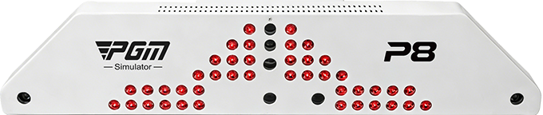
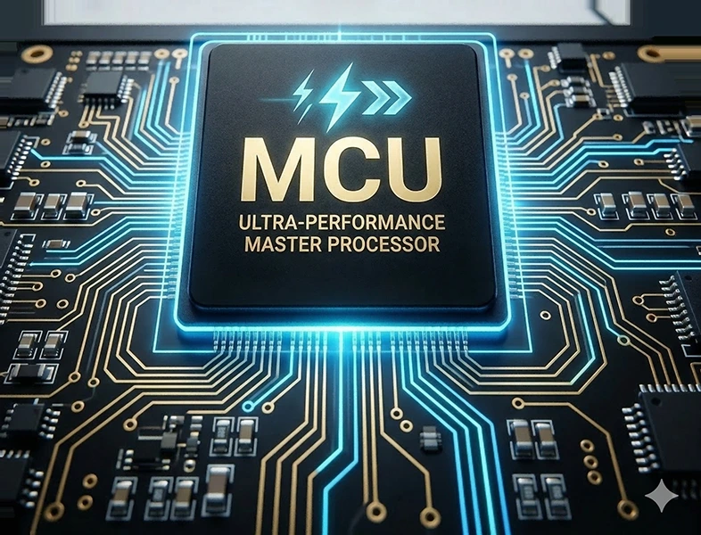
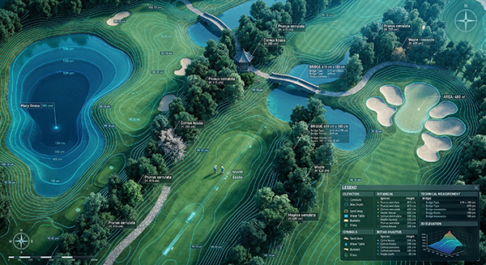

See the shot from more angles.
Four high-speed cameras capture the ball’s trajectory images from multiple viewpoints, expanding coverage and reducing blind spots.
THE PGM P8 GOLF SIMULATOR
Four high-speed cameras. A built-in MCU microcomputer. Detailed course environments. A room built around the way you play.
HOME GOLF ROOMS / CLUBS / ACADEMIES
THE TECHNOLOGY AT THE HEART OF P8
China’s first 4-camera high-speed vision detector.
PGM’s product innovation claim.

Four high-speed cameras capture the ball’s trajectory images from multiple viewpoints, expanding coverage and reducing blind spots.
An independent MCU microcomputer processes trajectory image data onboard, reducing the image-processing workload on the host PC.
Multi-angle trajectory images
Independent image processing
Shot data and ball-flight feedback
The host PC still runs the simulator software and course graphics. The detector is supplied with the P8 system.
Discuss a P8 configuration
INDEPENDENT PROCESSING. LESS PC WORKLOAD.
The P8 detector processes trajectory image data independently, inside the detector itself. Your computer can focus on simulator software and course graphics.
In systems that process detector images on the host PC, image processing shares CPU and GPU resources with other tasks. Heavy workloads can contribute to delayed processing or dropped data.
A built-in MCU handles trajectory image processing independently, reducing reliance on the host PC’s processing resources and helping keep shot feedback responsive and consistent.
PRECISION MEETS PLAY
High-speed vision cameras follow the strike, while a built-in MCU microcomputer processes trajectory images independently of the host PC.

Drone-mapped terrain and Unreal Engine 5 environments bring course contours and landscape detail into view.

Explore the eight-way platform for changing slopes, stance and balance. Platform integration and included equipment are confirmed with your setup.
WATCH THE P8 IN ACTION
Watch the golfer, shot feedback and complete simulator space in one demonstration.
Video could not be loaded. Open the video directly.
MORE WAYS TO PLAY
Practice with a purpose, explore a course or bring friends into a challenge.
01 / PRACTICE
Build a focused practice routine with a driving range, trajectory views and shot data.
02 / COURSE PLAY
Bring the course indoors with detailed fairways, hole layouts and immersive scenery.
03 / GAMES & CHALLENGES
Aim for the targets, follow your score and bring a little friendly competition to every session.
04 / ONLINE PLAY
Connect with other golfers online, invite friends to a match room and enjoy a round together. Ask about accounts, internet requirements and available online features.
THREE WAYS TO BUILD YOUR P8
The same P8 tracking technology. Three equipment packages to suit your room and the way you play.
MAKE IT YOURS
Choose what matters to you. Your package match updates as you explore.
2K laser projection with a high-specification simulator computer.
Motion or karaoke selects Premium, which includes both experiences and 4K projection.
Request a Standard quoteP8 / 2K LASER PROJECTION
Your everyday golf setup.
P8 / 4K LASER PROJECTION
Step up to 4K immersion.
P8 / 4K + MOTION + KARAOKE
Golf meets home entertainment.
| Equipment | Standard | Flagship | Premium |
|---|---|---|---|
| Laser projection | 2K | 4K | 4K |
| Simulator computer | High specification | Top specification | Top specification |
| 8-way motion platform | Not listed | Not listed | Included |
| Home karaoke package | Not listed | Not listed | Included |
| Shared P8 equipment above | Included | Included | Included |
Package contents are based on PGM’s supplied package sheet. Confirm current hardware specifications, software update terms, delivery and installation scope in your quotation.
SYSTEM REFERENCE
Manufacturer product information provides a starting point. Request an itemised quote for the equipment and software in your installation.
| Tracking | Four-camera high-speed vision detector |
|---|---|
| Onboard processing | Built-in MCU microcomputer; independent trajectory image processing |
| Course environment | Unreal Engine 5; drone-mapped terrain |
| Listed projection | Standard: 2K laser; Flagship / Premium: 4K laser |
| Listed projector brightness | 6,800 lumens |
| Listed light-source life | 25,000 hours |
| Motion option | Premium package includes an eight-way motion platform |
| Screen layouts | Single screen or curved screen |
PGM describes software output support up to 8K. The listed projector is 4K; actual output depends on the PC, software settings and display equipment. Projector model and final specifications are confirmed with your quotation.
THE SYSTEM, TOGETHER
Discuss these elements together when planning a complete installation. Final inclusions are confirmed individually.
FIND YOUR APPLICATION
Explore home, commercial and coaching use cases before choosing a configuration.
Explore solutionsSTART WITH THE SPACE
Compare single-screen and curved-screen reference dimensions and prepare your room brief.
Read the installation guideYOUR NEXT STEP
Tell us about your room, country and intended use.